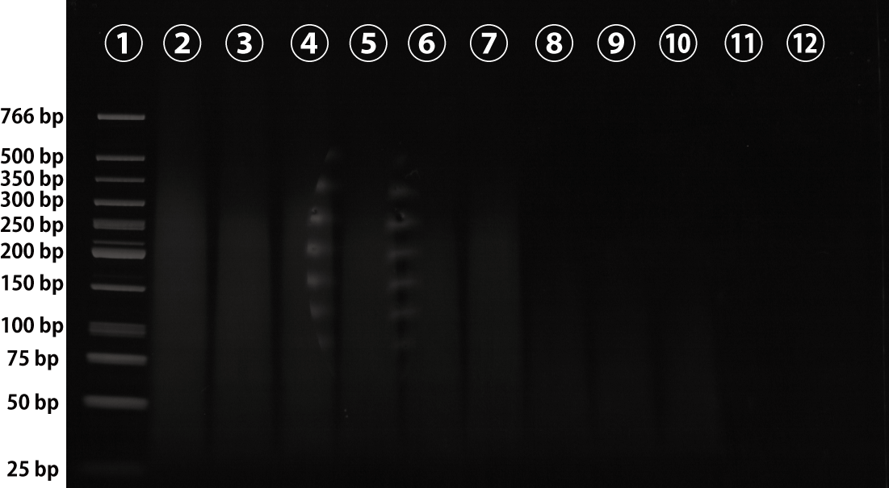
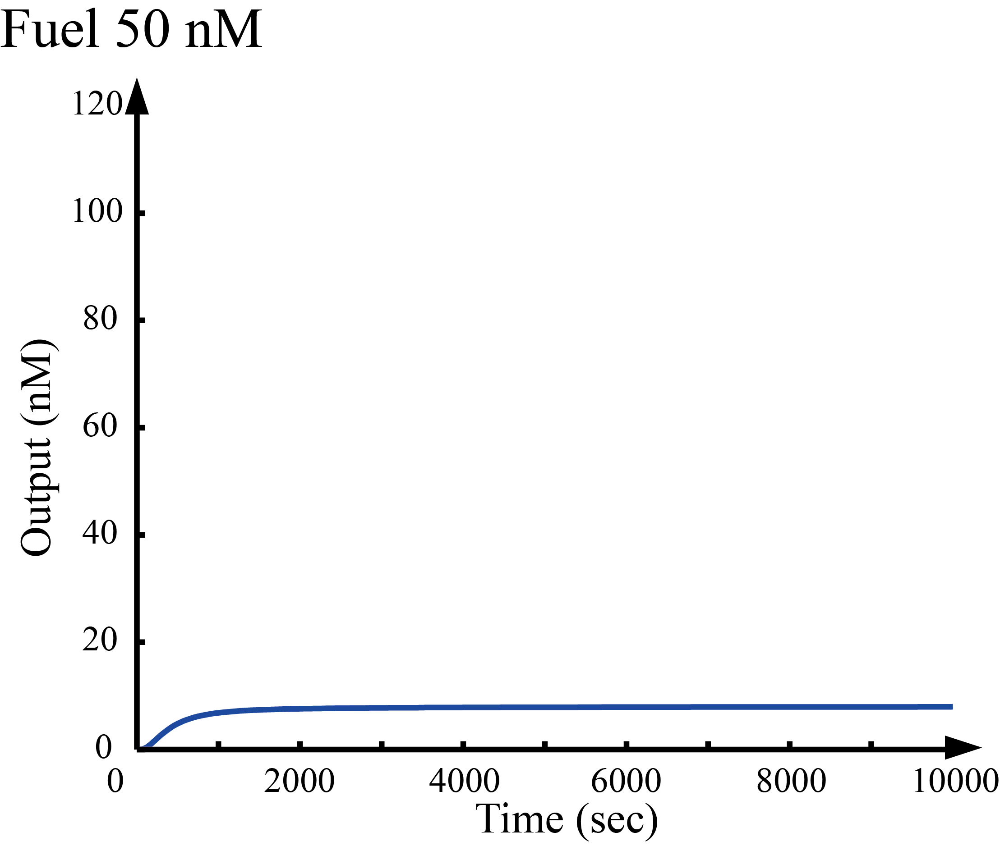

Wet Lab Experiment
Experiment 1 Ground design
It is first necessary to confirm whether the DNA structure (Ground) that is the track on which the DNA Walker runs is properly made. In this case, three annealing times, i.e., 1, 5, and 10 hours, were used to find an appropriate annealing condition. Ground A, B, and C were incubated as shown in the figure. In order to confirm that Ground A, B, and C were properly bound via C1 and C2 of single-stranded DNA, we carried out the following electrophoresis experiments. Since Ground A, B, C are each about 70 bp, the predicted length of Ground was about 200 bp. However, it was impossible to obtain a band near 200 bp in any cases where the annealing time was set to 1, 5, and 10 hours. Since annealing was carried out without S1 and S2, with a hairpin structure, there is a point where G1, G2, and G3 are present in a single-stranded state, and the structure is such that it is folded to a smaller conformation.
Figure 1
.png)
Figure 2
{kind=link}
| Wells | Sample |
|---|---|
| ① | DNALadder |
| ② | Ground A + B + C (1 h) |
| ③ | Ground A + B (1 h) |
| ④ | Ground B + C (1 h) |
| ⑤ | Ground A + B + C (5 h) |
| ⑥ | Ground A + B (5 h) |
| ⑦ | Ground B + C (5 h) |
| ⑧ | Ground A + B + C (10 h) |
| ⑨ | Ground A + B (10 h) |
| ⑩ | Ground B + C (10 h) |
| ⑪ | C1 |
| ⑫ | C2 |
Experiment 2 DSD containing mismatched base pairs
In the design of DNAWalker, mismatched base pairs were incorporated into the base sequence in order to block undesired reaction pathways. The specifications are as shown in the table, and verification was carried out using electrophoresis whether it was designed properly. It can be confirmed that it is designed to satisfy the specification properly from the comparison of lanes ⑥, ⑦, ⑧, ⑨. But in lane ⑩ the band was confirmed around 700 bp. This is probably because unintentional chains were linked in a chain in annealing to form a huge structure.
Figure 3

| Wells | Sample |
|---|---|
| ① | DNALadder |
| ② | S1 |
| ③ | S2 |
| ④ | F1 |
| ⑤ | F2 |
| ⑥ | S1-F1 |
| ⑦ | S1-F2 |
| ⑧ | S2-F2 |
| ⑨ | S2-F1 |
| ⑩ | F1-F2 |
Subsequently, verification of DSD on chains containing mismatched base pairs was performed by electrophoresis. The flow of the reaction is shown in the figure and the result is shown in the figure. In pattern A, a strand displacement reaction occurs between double-stranded DNA of s1-w1 and F1 corresponding to input, and w1 is released. Similarly, in pattern B, F2 reacts with s2-w2 double-stranded DNA and w2 is released. Pattern A seems to have not been exchanged for chain because no change is seen when checking the bands of lanes ⑥ and ⑦. On the other hand, Pattern B seems to have changed from the lanes ⑧ and ⑨, and the chain exchange was done. Regarding the pattern A in which the reaction did not occur properly, it is considered that the difference in energy was not large before and after the reaction. Therefore, it is necessary to finely adjust the base sequence so that a difference in energy occurs before and after the reaction.
Figure 4

| Wells | Sample |
|---|---|
| ① | DNALadder |
| ② | F1 |
| ③ | F2 |
| ④ | W1 |
| ⑤ | W2 |
| ⑥ | S1-W1 |
| ⑦ | S1-W1 & F1 |
| ⑧ | S2-W2 |
| ⑨ | S2-W2 & F2 |
Dry Experiment
We performed simulations using Matlab[1] to confirm that the Walker process depends on the initial concentration of Fuel. We simulated the time-dependent concentration change of Output after setting the initial concentrations of Walker and Ground in 100 nM, and the concentration of Fuel to 50, 100, 150, and 200 nM. Additionally, we simulated the concentration change of Output when changing the initial concentration of Fuel from 0 to 500 nM with a fixed time of 10000 seconds. As shown in Figures 1 to 4, we found that the time-dependent concentration change of Output depends on the initial concentration of Fuel. As shown in Figure 5, the concentration of Output increased rapidly when the initial concentration of Fuel was given more than a specific value. Additionally, the concentration of Output increased rapidly above a threshold value as the levels of Spot increased (Version A, B, and C).
Figure 5
{kind=link}
Figure 6

Figure 7

Figure 8

Figure 9

Figure 10

Reference
[1]Matlab: http://jp.mathworks.com/products/matlab/